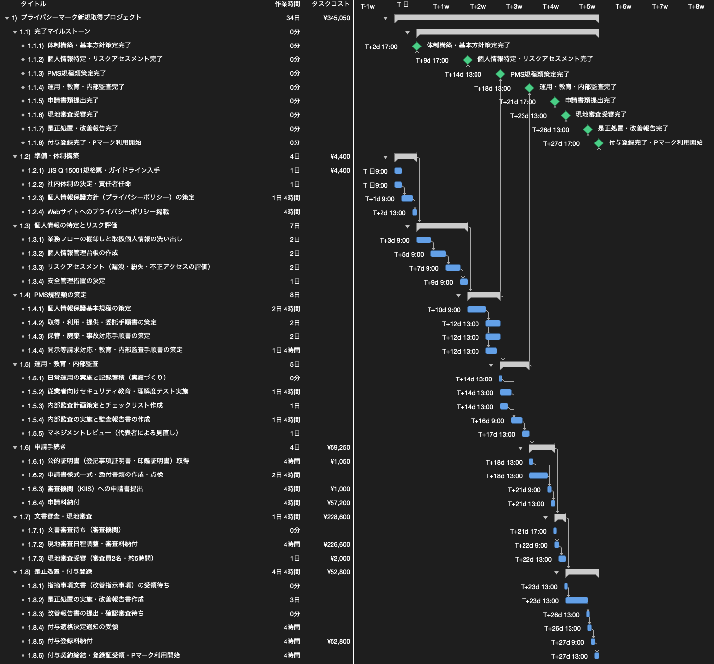
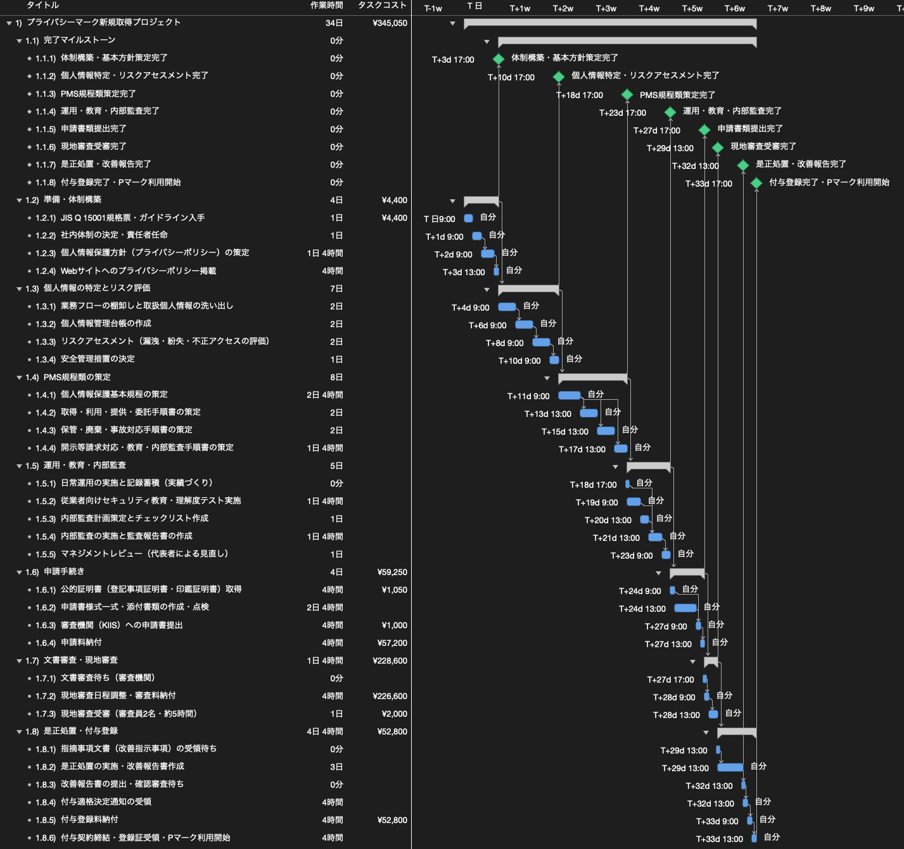

「プライバシーマーク（Pマーク）」を新規取得するWBSを作ってみた
今回は「WBSで覗いてみた」シリーズとして、「プライバシーマーク（Pマーク）を新規取得するWBS」を作成しました。
ITシステムの受託開発やコンサルティングを手掛ける事業者にとって、取引先からの信頼獲得や入札・発注要件のクリア、そして自社の情報セキュリティ体制の確立において、プライバシーマーク（JIS Q 15001適合認証）の取得は大きな意味を持ちます。しかし、取得までにどのような作業が必要で、実際にどれほどの期間や費用がかかるのかは、全体像が見えにくく見通しを立てにくい面があります。特にPマークは、規程作成などの実作業だけでなく、運用実績の蓄積や審査機関による審査待ちといった「外部待機期間」が長いため、全体の完了時期を予測することが容易ではありません。
そこで今回は、AIエージェントと協働しながら自力で推進することを想定し、必要なタスク、外部待機期間、そして2026年10月改定の最新公的費用をWBSに落とし込んで、全体にかかる期間やコストの予測を検証してみました。
今回の検証では、大阪府にある小規模事業者を基準とし、関西地域の指定審査機関である一般財団法人関西情報センター（KIIS）およびJIPDECへ申請を行う想定としています。対象範囲は、規格票の入手と体制構築から、規程類の策定、運用実績づくり、内部監査、申請、文書審査、現地審査、指摘事項への是正処置、そして付与登録完了に至る全工程です。
1. プライバシーマーク取得費用の構造
まず、プライバシーマークを新規取得する際にかかる費用について整理します。Pマークの審査費用は事業者の規模区分によって規定されており、小規模事業者（従業者数5人以下・資本金5,000万円以下）の区分においては2026年10月1日改定の最新料金体系が適用されます。
審査機関へ支払う公的費用は、申請時に納付する申請料が57,200円、書類審査および現地審査にかかる審査料が226,600円、審査合格後にJIPDECへ納付する2年分の付与登録料が52,800円となり、審査費用の小計は336,600円（すべて消費税10%込）となります。当区分では現地審査が原則として審査員2名による半日（5時間以内）で完了するため、中規模や大規模の事業者に比べて審査料が抑えられています。
審査費用以外の実費としては、現地審査を担当する審査員2名分の往復交通費（大阪市内にある審査機関から事業者拠点までの近郊電車運賃等で約2,000円）、日本規格協会から購入するJIS Q 15001の規格票代金（約4,400円）、法務局で取得する登記事項証明書および印鑑証明書の手数料（計1,050円）、申請書類や改善報告書の郵送費用（レターパックプラス等で約1,000円）が発生し、これらの実費合計は約8,450円となります。
このように、新規取得にかかる総費用は公的審査費用と実費のみの合計345,050円（約34万5,000円）となります。明確な費用構造を押さえることで、計画的な予算確保が可能であることが確認できました。
2. ガントチャートと全7フェーズの工程検証
Pマークの取得において最も予測が難しいのが「全体でどれほどの期間がかかるのか」というスケジュールの見通しです。実作業の工数だけでなく、審査機関側のスケジュールや運用実績の蓄積期間が組み合わさるため、単なるタスクの羅列では完了時期を見通せません。そこで、WBSを用いて各作業と外部待機期間の依存関係を構造化し、さらにリソースを割り当てて平準化することで、現実的な所要期間をシミュレーションしました。
全体の工程は、準備・体制構築から是正処置・付与登録までの7つのフェーズ・28タスクで構成されています。実務での突発的な対応や日常業務を考慮し、各作業工数は0.5日（半日＝4時間）刻みでゆとりを持たせて設定しました。プロジェクト管理ツール（OmniPlan）を用いて、論理的な依存関係の整理と、1名体制でのリソース平準化の2段階で検証を行いました。

論理的依存関係と各フェーズの作業内容（図1）
まずは担当者の制約を考慮せず、「先行タスクの成果物が完成していないと絶対に着手できない制約」のみを結合したタスク洗い出し段階のWBSを検証します。フェーズ間の節目を明確にするため、各フェーズグループどうしを依存関係で結んでゲートを設けています。
全7フェーズの流れは、大きく「規程類の構築」「実務運用と内部点検」「審査機関による審査と登録」という3段階に大別できます。
前半の準備・特定・規程策定（フェーズ1から3）では、社内体制の決定と基本方針の公表に始まり、業務フローから個人情報を洗い出して管理台帳とリスク評価を作成し、それらに基づいて基本規程および各手順書をドラフト作成します。ここまでの実作業工数は合計19日となります。
中盤の運用・教育・内部監査（フェーズ4）では、策定した規程に基づき最低1ヶ月間の日常運用実績を蓄積します。この待機期間と並行して従業者教育や監査準備を進め、実績が揃った段階で内部監査と代表者によるマネジメントレビューを行い、申請要件を満たします。実作業工数は合計5日です。
後半の申請・審査・是正登録（フェーズ5から7）では、申請書類の提出後、文書審査（約1ヶ月強）を経て半日の現地審査を受審します。その後、審査員からの指摘事項に対する是正処置と改善報告書の提出、判定委員会の審議を経て付与登録に至ります。実作業は合計10日ですが、各審査段階での待機期間がプロジェクト期間の大半を占める構造になっています。

1名体制でのリソース平準化と所要期間の予測（図2）
日々の業務を進めながら1名体制で本プロジェクトを担当することを想定し、自社で手を動かす全27タスクの担当リソースとして「自分」を割り当て、OmniPlanの自動平準化を実行した結果が図2です。
平準化前には並行していた手順書作成（フェーズ3）や、日常運用期間中の教育・監査準備（フェーズ4）、公的証明書取得と申請書類作成（フェーズ5）が、同一担当者の手によって順次直列に再配置されます。平準化後の実作業工数は合計34日（約272時間）となり、1名が集中して稼働した場合でも約7週間分の実働ボリュームであることがわかります。
そして、プロジェクト全体の期間を左右している最大の要因は、自社の作業時間以上に「外部待機期間」です。規程策定後の日常運用実績蓄積（約1ヶ月）、審査機関による文書審査待ち（約1ヶ月強）、現地審査後の改善指示待ちおよび判定委員会審議待ち（計約1ヶ月強）という外部待機期間が合計で約5ヶ月存在します。
自社の実作業34日をこの外部待機期間の合間に週1日から2日程度のペースで計画的に進めていくと、全体期間約7ヶ月（約33週から34週）でプライバシーマークを取得できると予想することができました。このように、実作業工数と外部待機期間を分けて平準化することで、本業と両立した場合のリアルな所要期間を客観的に導き出すことができます。
3. まとめ
今回は、プライバシーマークを新規取得する工程をWBSに分解し、タスクの依存関係や費用構造、そして全体にかかる期間の予測を検証しました。
Pマークの取得は膨大な規程作成や厳格な運用点検が求められるため、準備開始から取得完了までにどれほどの期間がかかるのか見通しが立ちにくいプロジェクトです。しかし、こうしてWBSに落とし込んで実作業工数（約34日）と外部待機期間（約5ヶ月）を切り分け、平準化シミュレーションを行うことで、日常業務の合間に進めた場合の現実的な工期（約7ヶ月）を高い確度で予想することができます。また、2026年10月の改定料金を反映した正確な費用構造を精査したことで、総額約34万5,000円という明確な予算感で取得を目指せる点も確認できました。
プロジェクト計画の基礎となるWBSの作り方や平準化の考え方について詳しく知りたい方は、「WBSの勘所」や「ガントチャートの決め手は平準化」もぜひ合わせてご覧ください。